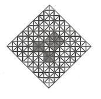
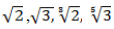
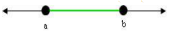

A Indústria Metalúrgica
OS NÚMEROS REAIS, OS INTERVALOS E A FUNÇÃO AFIM NO CONTEXTO DA INDÚSTRIA PETROQUÍMICA
Contextualizando
O Polo Petroquímico do Sul - "Polo de Triunfo" -, o terceiro centro de produção e processamento de petroquímicos básicos do Brasil é o principal núcleo produtivo do Rio Grande do Sul e juntamente com a indústria química, responde por 9,3% do produto industrial do Estado gaúcho. É constituído por oito empresas e inclui a Copesul, central de produção de matérias-primas. As outras sete empresas consideradas indústrias de segunda geração que produzem termoplásticos: PPH – OPP Petroquímica, Polisul – Ipiranga Petroquímica,Triunfo, Po/lolefinas - OPP Poliolefinas, Petroflex, Nitriflex do Sul- DSM Elastômeros e Oxiteno
O artigo “A evolução da indústria química no Brasil - análise do desempenho do polo petroquímico de triunfo”, escrito por Câmara e Santos e publicado em. Semina: Ci. Soc./Hum. Londrina, v. 19/20, n. 3, p. 35-49, set. 1998/ 1999 tem como objetivo verificar a consolidação do "Polo Petroquímico de Triunfo", implantado com os investimentos do /I PND, revelando o seu excelente desempenho financeiro no período: 1982/1997.
Com esse intuito ao longo do artigo, os autores expõem gráficos trazidos do Balanço Anual da Gazeta mercantil de diversos anos que mostram o desempenho econômico, a rentabilidade patrimonial e as exportações das empresas do Polo de Triunfo no período de 1992 a 1996~1997.
A análise dos gráficos, elaborados a partir de pesquisas realizadas, possibilita ao leitor maior compreensão do texto do artigo.
PARA SABER MAIS:
Acesse o vídeo clicando no link a seguir:
Que conhecimentos matemáticos, possibilitam a leitura significativa dos gráficos de linha?
Caro aluno,
Ao longo desse capítulo, propomos a retomada do estudo dos Números Reais e da função do 1º grau, o estudo da Teoria dos Conjuntos e dos Intervalos, subconjuntos dos Números Reais.
(RE)CONSTRUINDO CONHECIMENTOS
O CONJUNTO DOS NÚMEROS REAIS
Os Números Reais (R) representados numa reta, a Reta Real, são definidos como a União do Conjunto dos Números Racionais (Q) com o Conjunto dos Números Irracionais I.
O Conjunto dos Números Reais também é representado por meio do um diagrama a seguir denominado Diagrama de Venn em que se verificam as relações de inclusão entre os diferentes conjuntos numéricos: Naturais, Inteiros, Racionais, Irracionais e Reais
Os números racionais podem ser exatos ou periódicos. O número ao número 0,25 é um número decimal exato, que é obtido da seguinte forma: considerando a fração 1/4 (uma divisão indicada) dividindo-se 1 por 4 quatro, obtemos 0, 25, uma decimal exata, que se lê-se vinte e cinco centésimos e se representa 100/25 na forma de fração decimal, 25% na forma de porcentagem e 1/4 na forma de fração.
Considerando a fração 3/1, dividindo 1 por 3 obtemos 0,333... uma decimal infinita periódica em que o número 3 se repete infinitamente e é chamado período. Esse número decimal periódico é chamado dízima periódica e, a partir do período, pode-se encontrar a fração geratriz: 0,333...= 9/3 que, simplificando, 9/3 = 3/1 .
O número irracional √2 está relacionado à diagonal de um quadrado de lado 1.
RELEMBRANDO A HISTÓRIA
Pitágoras de Samos foi um dos grandes filósofos e matemáticos da Grécia Antiga. Fundou uma escola de caráter místico-filosófico que ficou conhecida como “Escola Pitagórica”. Entre muitas ideias a respeito da vida da astronomia e da matemática, os pitagóricos descobriram os números figurados, os números perfeitos e o famoso "Teorema de Pitágoras", um dos mais importantes teoremas da geometria, representado pela fórmula (c² = a² + b²) sendo seu enunciado descrito da seguinte maneira:
“No triângulo retângulo, composto por um ângulo interno de 90° (ângulo reto), a soma dos quadrados de seus catetos corresponde ao quadrado de sua hipotenusa.”
 Observando o quadro ”Composição com traços cinzentos” do pintor holandês Mondrian (1818), verificamos a representação do Teorema de Pitágoras em que os lados dos três quadrados se relacionam, formando o triângulo retângulo. Observando a tela, podemos constatar a famosa fórmula c² = a² + b², considerando c² a área do maior quadrado cujo lado é a hipotenusa do triângulo retângulo e a² + b² a soma das áreas dos quadrados menores cujos lados são os catetos do triângulo retângulo. Tomando o menor triângulo da figura como unidade de medida de área, constatamos que o quadrado da hipotenusa mede 16 unidades de área e que e soma dos quadrados dos catetos que também mede 16 unidades de área. Verificando a igualdade das medidas, temos uma comprovação do famoso Teorema que pode, também, ser comprovada com ternas como (7, 24, 25) e (9, 40 e 41), que representam os lados de triângulos retângulos, entendendo que a hipotenusa é o maior lado do triângulo retângulo e, portando, em cada terna 25 e 41 são as medidas das hipotenusas de cada triângulo. Observando a figura a seguir, podemos verificar que, para representar o número √2 , na reta numérica, a partir do centro O, foi desenhado um quadrado de lado 1 e foi traçada a diagonal OA, determinando o triângulo retângulo destacado em vermelho. Usando a relação de Pitágoras, para calcular a medida da diagonal do quadrado, verifica-se que a diagonal OA (hipotenusa do triângulo retângulo) mede √2 .
Com um compasso, a diagonal AO que mede √2, foi rebatida para a direita e para a esquerda do zero, localizando-se entre 1 e 2 e 2 localiza-se entre -2 e -1. Verificamos, assim, que a √2, geometricamente, está entre 1 e 1,5 que é um segmento de reta que corresponde ao Conjunto dos Números Reais maiores do que 1 e menores do que 1,5, isto é, o intervalo entre 1 e 1,5, percebe-se, então que a √2 localiza-se entre 1 e 2 e antes de 1,5.
Ao determinar a representação decimal da √2 percebe-se que esse número, como o número π são números decimais infinitos e não periódicos e caracterizam os Números Irracionais.
RETOMANDO PARA PROSSEGUIR
O número irracional é a relação de circunferência com o seu diâmetro, também, representado por um número decimal infinito não periódico.
As raízes inexatas como  e tantos outros, com o número π formam o conjunto dos Números Irracionais (I) que, reunidos com os Números Racionas (Q) formam o Conjunto dos Números Reais (R) assim, com os números irracionais, completa-se a reta de tal forma que, a cada Número Real, corresponde a um ponto da reta e, a cada ponto da reta, corresponde a um Número Real.
INTERVALOS NUMÉRICOS
Para estudar os intervalos numéricos, vamos revisar alguns conceitos da Teoria dos Conjuntos.
QUEM É?
Georg Cantor, matemático russo, nasceu no dia 3 de março de 1845 em St. Petesburg e morreu no dia 6 de janeiro de 1918 em Halle, Alemanha. Entre outros avanços na evolução da matemática, ele fundou a teoria dos conjuntos, introduziu o conceito de números infinitos e impulsionou o estudo das séries trigonométricas. Recebeu o seu doutorado em 1867 em Berlim e aceitou uma posição na Universidade de Halle em 1869, onde ele permaneceu até se aposentar em 1913.
OS CONJUNTOS
Um conjunto é um agrupamento de elementos é uma coleção qualquer de objetos. Cada
objeto pertencente a um determinado conjunto é chamado de elemento do
conjunto
Os conjuntos são usualmente nomeados por uma letra maiúscula do nosso
alfabeto (A, B, C,...) e podem ser representados por especificação dos
elementos (extensão) A = {1,3,5,7,9}; por especificação de uma
propriedade (compreensão) A = {x|x é impar menor que 10} ou por um
diagrama de Venn.
Se um objeto x é elemento de um conjunto A, dizemos que "x pertence a A", e indicamos
notação: x ∈ A (lê-se "x pertence a A"). Intuitivamente podemos dizer:
- Um quadrado pertence ao conjunto dos polígonos.
- O número 7 pertence ao conjunto dos números naturais ímpares.
- O Brasil pertence ao conjunto de todos os países do mundo.
- Niterói, Porto Alegre e Belo Horizonte pertencem ao conjunto das cidades do Brasil.
Se um objeto x não é elemento de um conjunto A, dizemos que "x não pertence a A" e indicamos isso pela seguinte notação: x ∉ A (lê-se " x não pertence a A").
Se A = {a,e,i,o,u} , temos a ∈ A, o ∈ A, b ∉ A, h ∉ A, etc.
Os conjuntos podem ser:
- Conjunto finito: aquele com número finito de elementos. Um dos tipos de conjunto finito é o conjunto unitário, que possui um único elemento. Exemplos: B = {1,2,3,4,5,6,7,8,9,10}, U = {4}.
- Conjunto vazio: não possui elementos. É representado por ∅ ou { }. Exemplos: A = {x ∈ N | x < 0}, B = {x | x ≠ x}, C = {x ∈ Z | 7 < x < 8}. Nesse caso: A = B = C ∅.
- Conjunto infinito: aquele com número infinito de elementos. Exemplo: I = {1,3,5,7,9,11,...}.
Sejam A e B conjuntos quaisquer. Se cada elemento do conjunto A é também elemento do conjunto B, dizemos que "A é um subconjunto de B" ou que "A está contido em B". Usamos a seguinte notação: A ⊂ B (lê-se: "A está contido em B" ou "A é um subconjunto de B").
Exemplos:
1) O conjunto
A = {1,2} é subconjunto de B = {1,2,3}, pois cada elemento de A
é também elemento de B. Nesse caso, podemos escrever A ⊂ B.
2) O conjunto C = {a,b,c,d}
é subconjunto de D = {a,e,b,i,o,c,u,d}, isto é, C ⊂ D, pois
todos os elementos de C estão em D .
3) O conjunto vazio ∅ é subconjunto de qualquer conjunto, inclusive dele mesmo, porque
não existe um elemento em ∅
que não esteja em qualquer outro conjunto. De outro modo:
"todos" os elementos de ∅
(isto é, nenhum elemento) pertencem a qualquer outro
conjunto.
Sejam A e B conjuntos quaisquer. Indicamos que A não é um subconjunto de B, isto é, que A não está contido em B , quando existe algum elemento de A que não pertence ou não está em B. Usamos a seguinte notação: A ⊄ B (lê-se: " A não está contido em B" ou "A não é um subconjunto de B"). Exemplo: O conjunto A = {1,2,3} não está contido em B = {2,3,4}, pois existe pelo menos um elemento de A ( o número 1) que não pertence a B. Nesse caso, podemos escrever A ⊄ B.
Observações:
1) Se A é um subconjunto de B, isto é, se A ⊂ B
, dizemos também que " B contém A" e denotamos por: B ⊃ A
(lê-se " B contém A").
2) A abertura dos sinais
⊂ "está contido" e
⊃ "contém" está sempre voltada para o
conjunto "maior".
OPERAÇÕES COM CONJUNTOS
UNIÃ
U A União dos conjuntos A e B é o conjunto de todos os elementos que pertencem a A ou a B ou a ambos. Denotamos a união de A e B por: A U B (lê-se: A união B). Ainda é possível escrever: U B = {x | x ∈ A ou x ∈ B}.
A U B
Exemplo: Seja A = {1,2,3} e B = {2,3,4} então A U B = {1,2,3,4}.
INTERSECÇÃO
U A Intersecção dos conjuntos A e B é o conjunto dos elementos que são comuns a A e B , isto é, a interseção dos conjuntos A e B é a coleção dos elementos que pertencem a A e também pertencem a B. Denotamos a intersecção de A e B por: A ∩ B (lê-se: A intersecção B ). Ainda é possível escrever: A ∩ B = {x | x ∈ A e x ∈ B}.
A ∩ B
Exemplo: Seja A = {1,2,3} e B = {2,3,4} então A ∩ B = {2,3}.
DIFERENÇA DE CONJUNTOS
A Diferença dos conjuntos A e B é o conjunto dos elementos que pertencem a A mas não pertencem a B ou que pertencem a B e não pertencem a A.
Denotamos a diferença de A e B por: A - B (lê-se: A menos B ). Ainda é possível escrever: A - B = {x | x ∈ A e x ∉ B} ou B – A (lê-se B menos A ) e podemos escrever:
Exemplo: Seja A = {1,2,3,4,...} e B = {4,5,6,7,8,...} então A - B = {1,2,3} e B - A = ∅.
CONJUNTO COMPLEMENTAR
Dado um conjunto A qualquer e um conjunto universo U, chama-se Complementar de A o conjunto dos elementos que não pertencem ao conjunto A. Este conjunto pode ser representado por Ac (Lê-se A complementar).Veja o diagrama de Venn que representa o Conjunto Complementar Exemplo: Seja U = N e A = { 1, 2, 3, 4, 5 }, então, Ac = U – A = { 6, 7, 8, 9,... }
OS INTERVALOS – SUBCONJUNTOS DE NÚMEROS REAIS
Os intervalos são subconjuntos do conjunto dos Números Reais e podem ser representados de diferentes maneiras: na linguagem de conjuntos, {x ∈ R | a ≤ x ≤ b} , na notação de Intervalos [a,b]  na linguagem gráfica na reta real.
Dados dois números reais quaisquer a e b , com a ≤ b ,delimitam um intervalo e dependendo do fato de incluímos ou não seus extremos, os números a e b (intervalos limitados), podemos escrever:
Observações: Ao determinar intervalos na reta real, se um ou os dois extremos pertencem ao intervalo, representamos esse fato na linguagem gráfica, por círculos cheios e, quando um ou os dois extremos não pertencem ao intervalo, representamos esse fato na linguagem gráfica, por círculos vazios. Quando a = b , o intervalo fechado [a,b] resume-se a um único elemento.
Exemplos: Na tabela a seguir observamos exemplos de intervalos escritos nas diferentes linguagens com a identificação dos tipos e a sua descrição:
OPERAÇÕES COM INTERVALOS
1) Sendo A = {x ∈ R | 2 ≤ x < 5} e B = {x ∈ R |3 ≤ x < 8}, determine na linguagem de intervalos e represente na reta:
𝐴 ∪ 𝐵, 𝐴 ∩ 𝐵, 𝐴 − 𝐵,𝐵 − 𝐴
2) Sendo A = {x ∈ R | − 2 ≤ x ≤ 0} e B = {x ∈ R | x > −1}, determine e represente na reta:
𝐴 ∪ 𝐵, 𝐴 ∩ 𝐵, 𝐴 − 𝐵,𝐵 − 𝐴, 𝐴𝐶

VAMOS PRATICAR...
1) Escreva os conjuntos seguintes usando a notação de intervalos.
2) Classifique cada sentença como verdadeira ou falsa.
3) Determine e represente na linguagem de intervalos A ∪ B, A ∩ B e A -B para os intervalos os itens a e b.
O PLANO CARTESIANO
Para determinar o plano cartesiano, e representar as funções reais escolhem-se duas retas perpendiculares, indicando com uma flecha o sentido positivo, denominadas Retas Reais, onde estão representados os Números Reais. O ponto de intersecção das duas retas designa a origem do sistema cartesiano, representado pelo par ordenado (0,0). Os eixos dividem o plano cartesiano em quadrantes, que são numerados no sentido anti-horário. Cada ponto é localizado no plano, por um par ordenado (x,y), composto por dois números reais, chamados coordenadas do ponto, em que o primeiro elemento refere à localização do ponto no eixo horizontal (abscissa do ponto) e o segundo elemento refere à localização no eixo vertical (ordenada do ponto).
FUNÇÃO POLINOMIAL DE 1º GRAU
As funções de 1º grau têm como domínio o conjunto dos Números Reais (R) ou um subconjunto de R. Correspondem às relações entre a variável dependente e a independente expressas por polinômios do 1º grau, portanto da forma ax + b com a ≠ 0. Como as demais funções reais, estas são muito importantes, pois servem para descrever e modelar fenômenos das Ciências e processos produtivos, especialmente utilizados em indústrias. Para estudar as funções polinomiais, vamos revisar alguns conceitos:
O CONCEITO DE FUNÇÃO
Dados dois conjuntos não vazios A e B, uma função f: A → B (Lê-se “uma função f de A em B”) é uma relação de A em B que, a cada elemento x ∈ A, corresponde um único elemento y ∈ B. A relação se expressa por uma regra (ou conjunto de instruções) que chamamos de lei da função.
O conjunto A chama-se domínio da função e o B de contradomínio da função. Para cada x ≠ A, o elemento y ≠ B chama-se imagem de x pela função f ou o valor assumido pela função f no ponto x ≠ A e o representamos por f(x). Assim, y = f(x).
Em resumo, para termos uma função precisamos de três componentes: o domínio, o contra domínio e a lei de correspondência.
GRÁFICO DE UMA FUNÇÃO: O gráfico de uma função f: A → B é o subconjunto G do produto cartesiano A x B formado por todos os pares ordenados (x, y) em que x é um elemento qualquer do conjunto A e y = f(x) pertence a B. A cada par (x, y) associamos um ponto no plano cartesiano. O conjunto de todos esses pontos (x, y) será o gráfico de f(x).